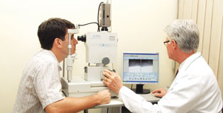

Exames
A acuidade visual é a capacidade de discriminar dois pontos próximos como elementos separados, o que corresponde à nitidez da visão e a sua observação. É um dos testes mais utilizados como parte do exame oftalmológico. Utiliza-se a tabela de Snellen, constituída por letras de diferentes tamanhos, situadas numa série de linhas, as maiores na parte superior e as menores na inferior. Para realizar o exame em crianças que ainda não saibam ler, utilizam-se símbolos facilmente identificáveis. Quando o paciente consegue distinguir todos os símbolos, até os mais reduzidos, considera-se que a sua acuidade visual é de 20/20, ou seja, perfeita. É empregado mesmo em casos de opacidade relativa (catarata, hemorragia vitrea, leucoma), pois pode fornecer o prognóstico do desempenho visual de uma cirurgia.
Exame complementar ao exame oftalmológico, realizado por um técnico (ortoptista). Visa detectar as alterações da visão binocular (utilizando os dois olhos) como o Estrabismo, a Ambliopia (baixa de visão em um dos olhos).
A campimetria computadorizada é um exame mais minuncioso que a versão manual, utilizado para avaliar o campo visual e identificar alterações da retina e ou do nervo óptico (seja de restrição de alguma porção do campo visual ou uma perda da sensibilidade do nervo óptico).
O exame é indicado em casos de doenças do nervo óptico, ou doenças neuroftalmológicas (neurite em atividade ou sequela, compressão do nervo óptico por tumores como adenoma de hipófise, infiltração tumoral ou tumores do nervo óptico, edema de papila, hipertensão intra-craniana, doenças degenerativas de nervo óptico, distrofias e degeneração de retina, doenças desmielinizan- tes e glaucoma).
Este exame é utilizado para verificar o campo visual, avaliando as funções da retina, nervo óptico e vias ópticas, podendo ser central e periférico.
Indicado no acompanhamento do glaucoma, de endocrinopatias, de máculopatias, e de neuropatias envolvendo as vias ópticas. O exame é solicitado pelo DETRAN, para concessão da licença para direção de automóveis.
Indicado no acompanhamento do glaucoma, de endocrinopatias, de máculopatias, e de neuropatias envolvendo as vias ópticas. O exame é solicitado pelo DETRAN, para concessão da licença para direção de automóveis.
É um exame que determina a curvatura da córnea em sua região central, tomando-se como bases dois eixos ortogonais entre si em 90°. Identifica o eixo e o grau do astigmatismo.
É essencial na adaptação de lentes de contato, na avaliação de pacientes com ceratocone e no cálculo das lentes intraoculares que serão empregadas em cirurgias de catarata.
É essencial na adaptação de lentes de contato, na avaliação de pacientes com ceratocone e no cálculo das lentes intraoculares que serão empregadas em cirurgias de catarata.
Analisa-se a curvatura anterior da córnea e está indicando no pré e pós-operatório de cirurgias refrativas (Lasik e PRK), em transplantes de córnea, em pacientes portadores de ceratocone, de astigmatismo irregular e assimétrico, pós-trauma e todas as patologias que modifiquem a superfície da córnea. Esta avaliação é indispensável para adaptação de lentes de contato. As áreas do mapa topográfico que apresentam cores quentes (vermelho e amarelo) correspondem a curvaturas proporcionalmente mais altas do que as áreas de cores frias (azul e verde).
É a medição das diversas estruturas do olho através do ultra-som. Permite a medição do comprimento do olho (comprimento axial) dado fundamental para o cálculo do poder dióptrico (grau) da lente intra-ocular a ser utilizada na cirurgia de catarata. É possível também avaliar as dimensões da câmara anterior, cristalino e vitreo.
A importância do cálculo preciso das lentes intra-oculares implica no desenvolvimento do controle cirúrgico do astigmatismo e também do crescimento das expectativas do paciente e cirurgião.
A importância do cálculo preciso das lentes intra-oculares implica no desenvolvimento do controle cirúrgico do astigmatismo e também do crescimento das expectativas do paciente e cirurgião.
Avalia o ângulo da câmara anterior, íris e superfície do cristalino, com lentes em contato com a córnea as quais funcionam como espelhos angulados. Este exame é realizado com ajuda do biomicroscópio ou lâmpada de fenda.
A gonioscopia é utilizada em pacientes portadores de glaucoma para o diagnóstico do tipo de glaucoma (agudo de ângulo aberto, agudo de ângulo fechado, crônico, pigmentário, pseudoexfoliativo, congênito, secundário). O diagnóstico é auxiliado por meio das observações características apresentadas ao exame.
A gonioscopia é utilizada em pacientes portadores de glaucoma para o diagnóstico do tipo de glaucoma (agudo de ângulo aberto, agudo de ângulo fechado, crônico, pigmentário, pseudoexfoliativo, congênito, secundário). O diagnóstico é auxiliado por meio das observações características apresentadas ao exame.
É um exame complementar onde todo o fundo do olho e as suas estruturas são avaliadas. É realizado sob midríase (dilatação pupilar) com colírio e difere da Fundoscopia simples porque neste exame só as estruturas centrais do fundo do olho são visualizadas.
O Mapeamento da retina é feito com a utilização de um aparelho chamado oftalmoscópio indireto e com o auxilio de uma lente que o médico segura entre o olho e o aparelho, a qual neutraliza o poder de refração da córnea e assim permite a visualização das estruturas internas. Devido à forte luz utilizada, mesmo em olhos com opacidades de meios como catarata ou doenças da córnea, o exame quase sempre é possível.
O Mapeamento da retina é feito com a utilização de um aparelho chamado oftalmoscópio indireto e com o auxilio de uma lente que o médico segura entre o olho e o aparelho, a qual neutraliza o poder de refração da córnea e assim permite a visualização das estruturas internas. Devido à forte luz utilizada, mesmo em olhos com opacidades de meios como catarata ou doenças da córnea, o exame quase sempre é possível.

Estuda o endotélio corneano (a camada interna da córnea), avaliando a densidade, homogeneidade de tamanho, alteração da forma e dos limites celulares.
É indicação em todo pré-operatório de cirurgia intra-ocular do segmento anterior (catarata), no acompanhamento de patologias endoteliais e distrofias corneanas, pré e pós-operatório de transplante de córnea, em cirurgias refrativas (Lasik e PRK) e ainda a todo usuário de lentes de contato.

É indicação em todo pré-operatório de cirurgia intra-ocular do segmento anterior (catarata), no acompanhamento de patologias endoteliais e distrofias corneanas, pré e pós-operatório de transplante de córnea, em cirurgias refrativas (Lasik e PRK) e ainda a todo usuário de lentes de contato.
Este método utiliza um feixe focalizado de ultra-som para medir a espessura da córnea (paquimetria). Pode ser realizado na área central, paracentral, e na periferia da córnea, fornecendo medidas em micra. Em caso de afinamento corneano localizado, pode-se medir em um ponto isolado. A média aritmética de cada região estudada poderá ser apresentada. É indicado para os portadores de glaucoma, os usuários de lentes de contato, nas cirurgias refrativas (Lasik e PRK) e intraoculares e para acompanhar distrofias corneanas.
Realizada através de um computador constituído de um auto-refrator e auto-ceratômetro, serve para medir o grau, curvatura da córnea e distância pupilar ao mesmo tempo, dando agilidade e excelente precisão à aferição e diminuindo a possibilidade de erros na confecção do grau para óculos e lentes de contato, sem depender da informação do paciente.
Este equipamento facilita muito o exame em crianças a partir de três anos de idade.
Este equipamento facilita muito o exame em crianças a partir de três anos de idade.
A Retinografia é um exame no qual se documenta o fundo do olho através de um registro fotográfico, que tem como objetivo documentar eventuais alterações da retina, para estudo e acompanhamento da evolução do problema, como no caso da retinopatia diabética hipertensiva e ainda do glaucoma (alterações na forma e tamanho da escavação do disco óptico que podem estar ligados ao glaucoma).
Representação bidimensional de ecos, que fornecem características anatômicas e topográficas da região examinada. Utiliza a sonda de ultra-som de 10Hz que permite a obtenção de imagens de estruturas bulbo ocular.
O método é indolor, sendo necessário o contato da sonda com as pálpebras ou as córneas através de um gel condutor.
O método é indolor, sendo necessário o contato da sonda com as pálpebras ou as córneas através de um gel condutor.
Capsulotomia (Yag Laser) é o exame realizado com laser e indicado principalmente para tratamento de opacidade capsular no pós-cirúrgico de catarata.
Ocasionalmente, surge uma opacidade na cápsula posterior, região do olho na qual a lente intraocular está apoiada. Essa opacidade evolui com piora da visão após a cirurgia, chamada tecnicamente de catarata secundária, pois a visão volta a ficar turva.
O processo de aplicação do laser elimina essa opacidade, restabelecendo a visão. O exame é realizado em caráter ambulatorial.
Ocasionalmente, surge uma opacidade na cápsula posterior, região do olho na qual a lente intraocular está apoiada. Essa opacidade evolui com piora da visão após a cirurgia, chamada tecnicamente de catarata secundária, pois a visão volta a ficar turva.
O processo de aplicação do laser elimina essa opacidade, restabelecendo a visão. O exame é realizado em caráter ambulatorial.